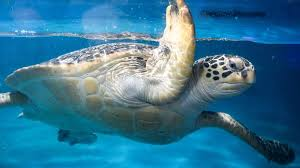
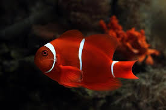
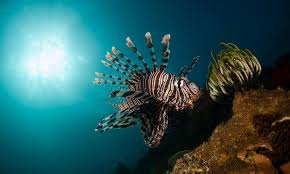

penyu adalah hewan yang banyak du temukan bertelur di beberapa pesisir pantai di indonesia sejak dahulu,

Ikan badut ini dapat dikenali dengan warna jingganya ikan ini tumbuh mencapai 8cm serta termasuk kedalam ikan terpopuler di dunia

Lion fish atau volintans adalah ikan berbisa milik keluarga yang scorpanidae terjemahan harfish berarti ikan kalajengking.
Ikan moorish idol adalah salah satu ikan yang cukup populer di kalangan para hobiis ikan hias karna bentuknya yang unik dan pola warna yang menarik.